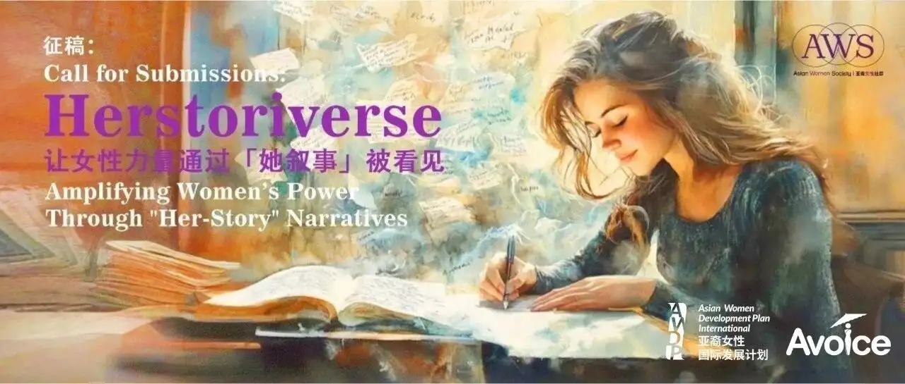
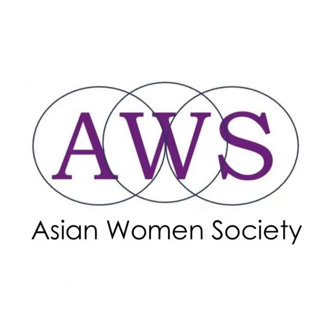
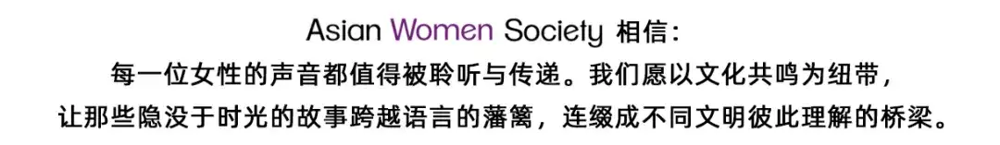
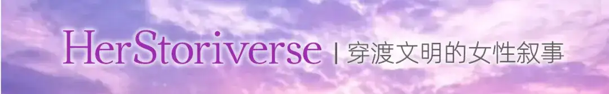
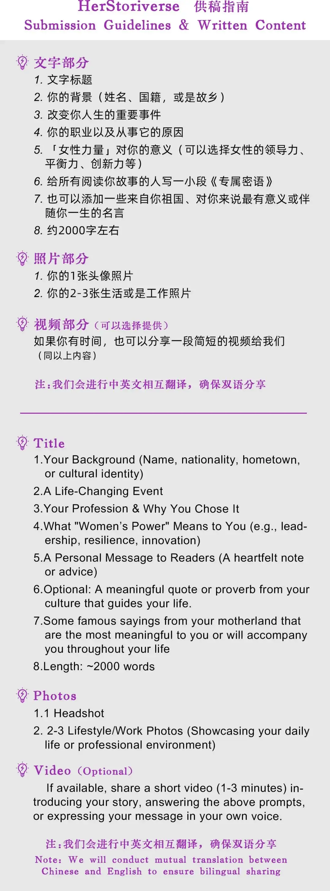
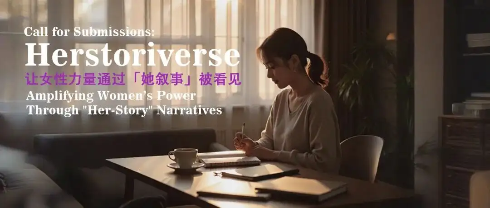
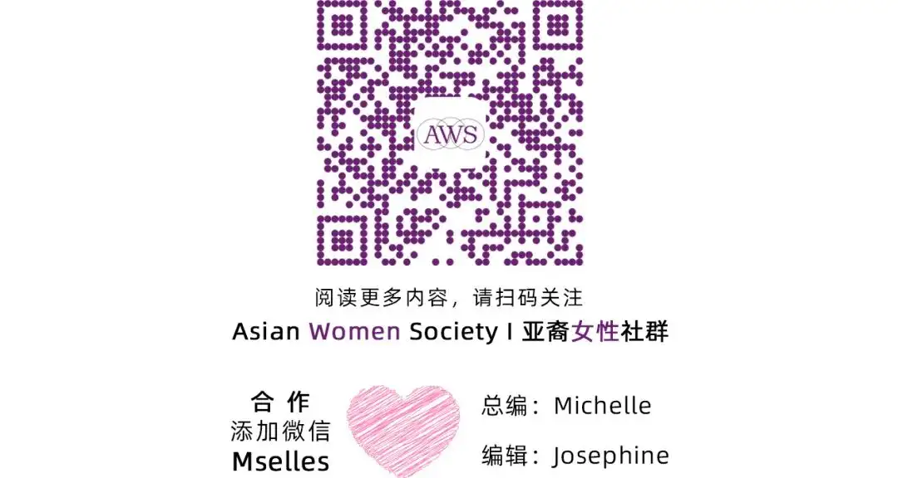

以下文章来源于AsianWomenSociety上海 ，作者feifei小可爱

AWS是一个专注于多元、融合、包容和平等的女性平台。AWS致力于促进性别平等的领导力和影响力，凝聚各行各业的优秀女性，碰撞思想力量、激发更多可能性。




HerStoriverse致力于推动女性叙事实践，通过鼓励女性书写真实生命故事，实现女性内心世界的具象化呈现。
HerStoriverse具有双重赋能价值：叙事行为本身构成「打破沉默」的疗愈过程，既帮助叙事者系统性地重构成长轨迹，也使阅读者在共鸣中获得情感支持和实践策略。当
「个人故事
」汇聚成
「集体记忆
」时，将突破单一的叙事框架，生动地呈现出女性生命经验的复杂光谱。这种群体性叙事实践形成镜像效应，使参与者在他人经历中照见自我，从而构建身份认同并汲取积极力量。
我们想特别说明的是：HerStoriverse的叙事者不是指“普世标准”的成功女性，而是指每一位“真实而不断努力前行”的女性。
打破“成功”的单一标准
传统叙事常将“成功女性”局限为职场精英、完美母亲等光鲜形象。HerStoriverse不用财富、地位、婚姻等单一标准定义女性价值，而是认为每个女性在各自人生阶段中的坚持都值得被看见——普通女性的日常努力同样构成女性力量的重要部分。
强调「真实」胜过完美
社会常期待女性呈现“全能完美”的形象，导致很多普通女性陷入焦虑。在升学、婚恋、育儿等人生赛道上，很多女性可能暂时没有达到社会定义的“成功终点”。HerStoriverse主张接纳女性真实的生存状态：可以脆弱但依然前行，可能失败却继续尝试，过程比结果更重要。
*通过讲故事来治愈：重拾你的故事，把痛苦转化为力量。
*激发全球姐妹情谊：你的声音可以点燃世界各地某人的勇气。
*挑战刻板印象：帮助打破关于女性生活的过时神话。
*超越“榜样”: 我们认为每位女性的故事都值得被看见——无论是否符合传统的“成功”标签。
*真实胜过完美: 职业道路从非一帆风顺。我们赞颂挣扎、转型与成长。
*全球姐妹联结: 从首尔的工程师到内罗毕的创业者，我们的故事跨越文化与行业。
HerStoriverse is dedicated to advancing women’s narrative practices by encouraging women to document their authentic life stories, giving tangible form to the inner worlds of female experiences.
This initiative holds dual empowering value: the act of storytelling itself becomes a healing process that breaks silence, enabling narrators to systematically reconstruct their growth journeys while offering readers emotional resonance, practical strategies, and solidarity . When individual stories converge into collective memory, they transcend singular narratives, vividly illuminating the complex spectrum of women’s lived experiences. This communal storytelling creates a "mirror effect," allowing participants to see reflections of themselves in others’ journeys, fostering identity affirmation and drawing strength from shared struggles.
Redefining "Success"
Traditional narratives often glorify "successful women" as high-achieving professionals or flawless mothers. HerStoriverse rejects narrow metrics like wealth, status, or marital status. Instead, we honor the quiet resilience of ordinary women—their daily efforts, setbacks, and growth are equally vital expressions of women’s power.
Embracing Authenticity Over Perfection
Societal pressure to embody "perfection" traps many women in anxiety. On life’s paths—education, relationships, motherhood—many may not yet meet externally defined "success." HerStoriverse celebrates raw, unfiltered truths: vulnerability paired with perseverance, failures that fuel courage, and the belief that the journey matters more than the destination.
*Heal Through Storytelling: Reclaim your narrative and transform pain into power.
*Inspire Global Sisterhood: Your voice could ignite courage in someone across the world.
*Challenge Stereotypes: Help dismantle outdated myths about women’s lives.
*Beyond "Role Models": We believe every woman’s story matters—not just those labeled "successful" by traditional standards.
*Raw Truths Over Perfection: Career paths are rarely linear. We celebrate struggles, pivots, and lessons learned.
*Global Sisterhood: From engineers in Seoul to entrepreneurs in Nairobi, our stories bridge cultures and industries.


